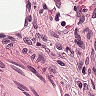

Breast Cancer Detector
for Histopathology Image Patches
powered by
Artificial Intelligence

Ai is Loading...
IDC Detector
Metastatic Cancer Detector
Results
What would you like to detect?
Metastatic Cancer
Invasive Ductal Carcinoma
Submit Images
jpeg or png
Please Note: This is a prototype.
Predict